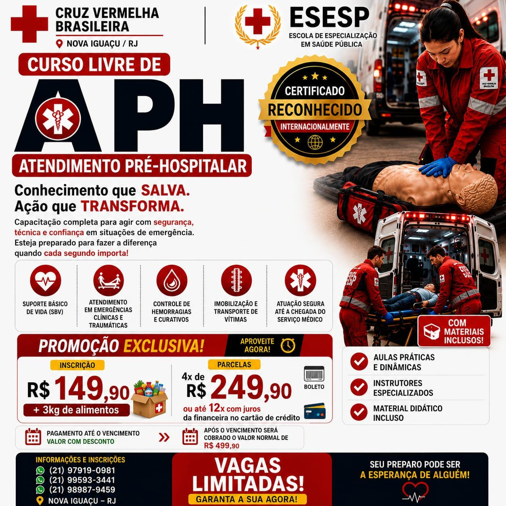
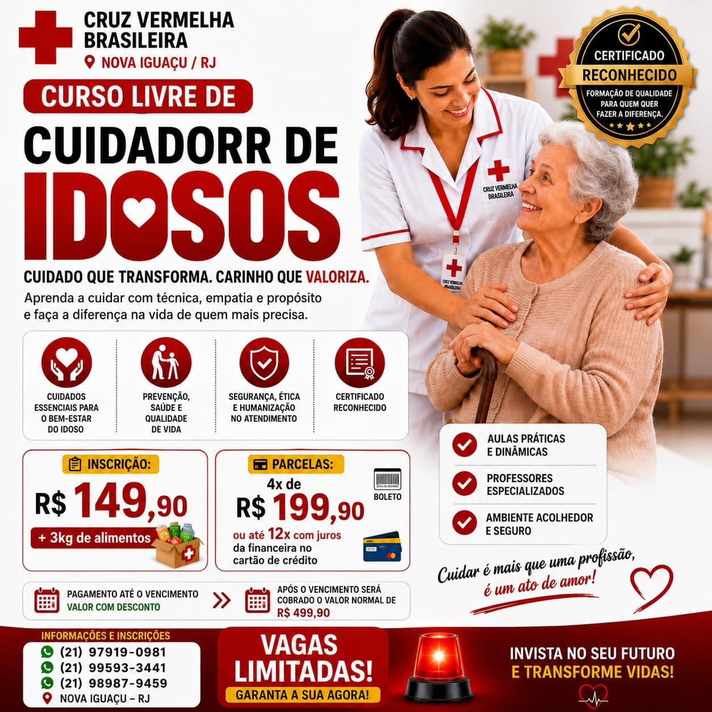
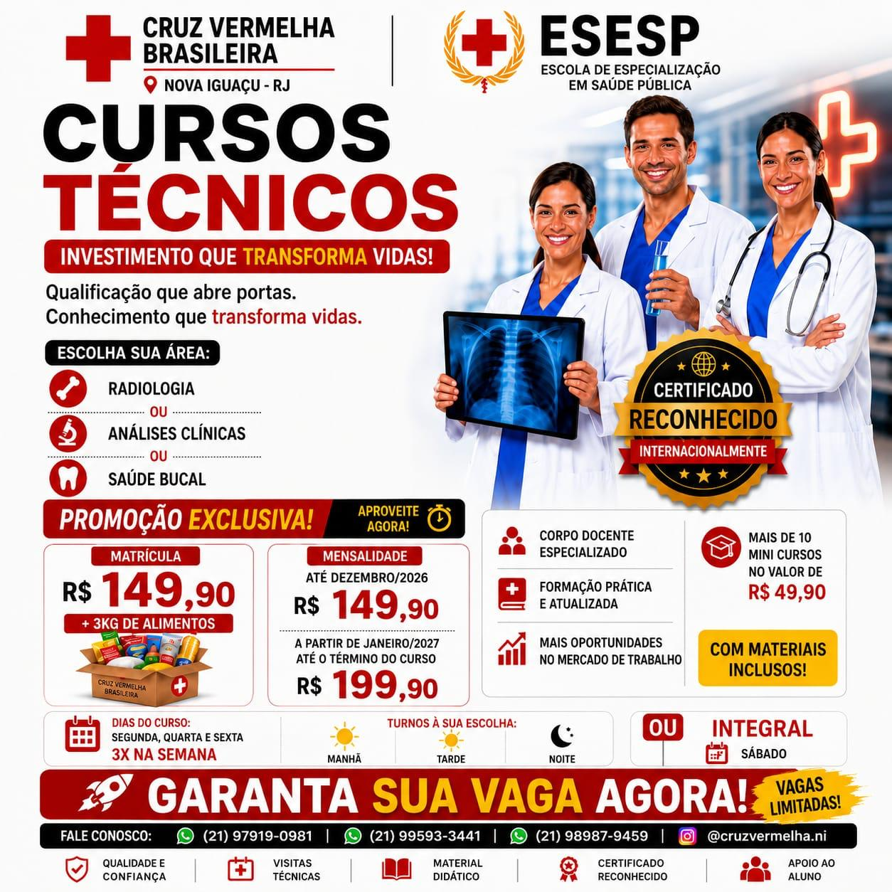
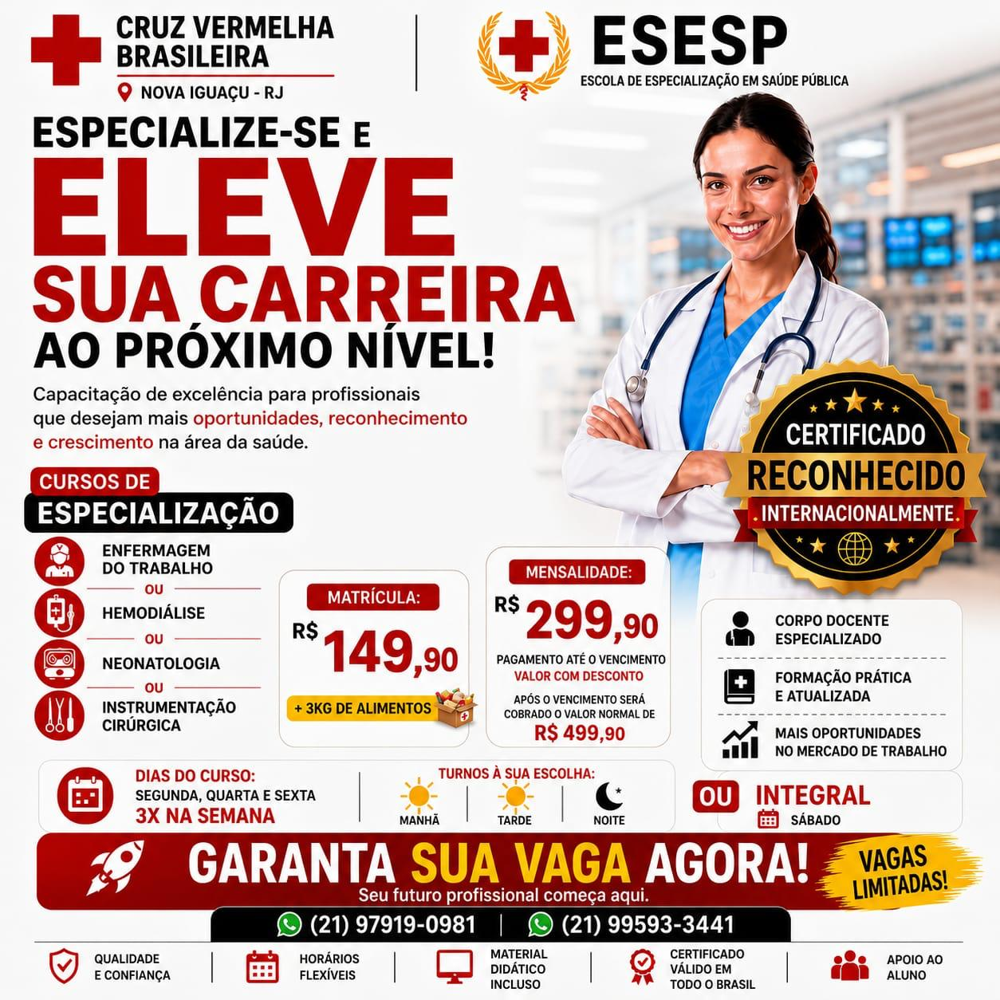

Curso técnico
Técnico em Enfermagem
Formação completa, prática e reconhecida para quem deseja atuar no cuidado direto ao paciente e conquistar espaço no mercado da saúde.
Tenho interesseVeja as opções disponíveis sem repetições, separadas por categoria para facilitar sua escolha.
Formação completa, prática e reconhecida para quem deseja atuar no cuidado direto ao paciente e conquistar espaço no mercado da saúde.
Tenho interesse
Capacitação para agir com segurança, técnica e confiança em situações de emergência até a chegada do serviço médico.
Pedir informações
Formação para cuidar com técnica, empatia, segurança e humanização, valorizando o bem-estar do idoso.
Pedir informações
Opções técnicas para quem busca qualificação profissional na área da saúde, com formação prática, corpo docente especializado e apoio ao aluno.
Consultar vagas
Capacitações para profissionais que desejam mais oportunidades, reconhecimento e crescimento na área da saúde.
Falar com a escolaFormação para concluir os estudos do fundamental ao médio, com flexibilidade para estudar no seu tempo e abrir novas oportunidades.
Quero saber mais